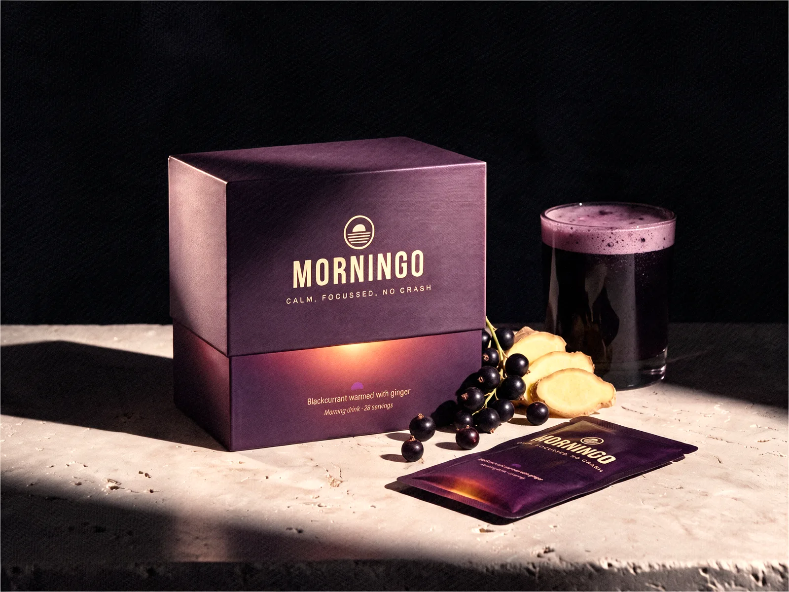
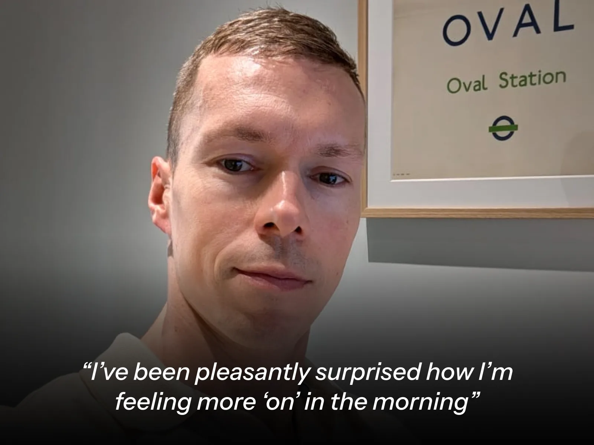
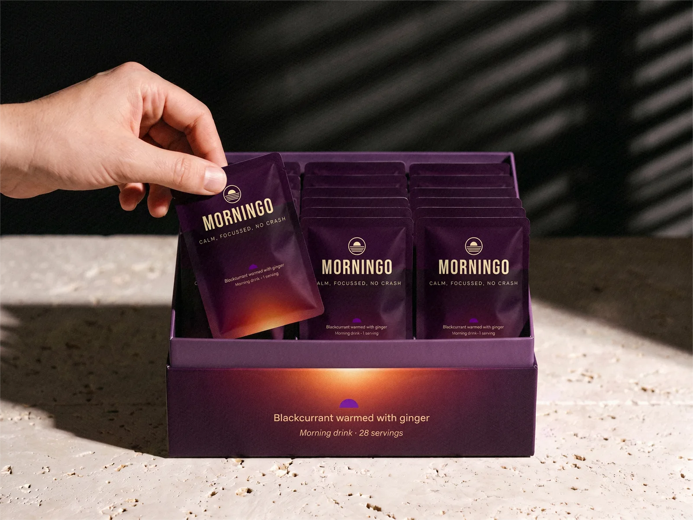

Calm focus. All morning, alongside your coffee.
Get the morning off to a proper start. One sachet in a glass of water, first thing, so the hours after feel like the first one did.
£60
28 servings
Flavour: Blackcurrant warmed by ginger
Limited first release. Not on sale yet.
No payment now. We'll email you when your place opens.
What to expect
Within the first few minutes, a mild warmth. Nothing dramatic. From around thirty minutes, energy building smoothly rather than arriving all at once. No spike, no edge. Just clear and composed through the morning.
What's in it
Each sachet contains
Active ingredients
- Green tea extract, 160mg
- Gives 80mg of caffeine. Caffeine helps to increase alertness.
- L-theanine, 150mg
- The amino acid tea has and coffee doesn't, alongside the caffeine.
- Rhodiola rosea root extract, 300mg (3% rosavins)
- A cold-climate root, studied for mental fatigue under stress. Give it two weeks.
- Blackcurrant extract, 300mg (35% anthocyanins)
- The dark pigment in blackcurrants, studied for blood flow and the brain, over weeks. Also gives the colour and flavour.
- Ginger root extract, 300mg
- A gentle warmth in the first few minutes, so you know it's started.
- Vitamin B12 (methylcobalamin), 5mg (200% of your daily reference)
- Contributes to the reduction of tiredness and fatigue.
- Vitamin B5 (pantothenic acid), 6mg (100% of your daily reference)
- Contributes to normal energy-yielding metabolism and the reduction of tiredness and fatigue.
Other ingredients
- Sunflower lecithin
- Mixes the powder smoothly and makes the froth on top.
- Citrus fibre
- Gives the drink its body. Made from citrus peel.
- Natural flavouring
- Rounds out the blackcurrant and ginger flavour.
Vegan
No artificial sweeteners
Research-led formula
Gluten free
Is it right for me?
For you if the hours between your first coffee and lunch feel harder than they need to.
Not for you if:
- You want a hit. It won't kick in like a double espresso, and it isn't meant to.
- You want a verdict after one sachet. It builds over time, so give it two weeks.
- You're sensitive to caffeine. It contains 75mg, from green tea extract. Factor that in.
Have it with your coffee, or without.
47+ versions to get here. Then we let people try it.
A small group's been trying it. Here's what they're telling us so far.
"I've been pleasantly surprised how I'm feeling more 'on' in the morning"
Loic
"Two weeks in and the 10am slump just isn't happening."
Dan
"I was sceptical. I'm less sceptical now. Mornings feel more consistent."
James T. — Freelance consultant, London
"Calm is the right word. Not a buzz. Just steady."
Rachel K. — Entrepreneur, Manchester